头发
异国剑士 p08 逻辑头发组/头发骨骼/导出模型
关掉头发，对照颅顶
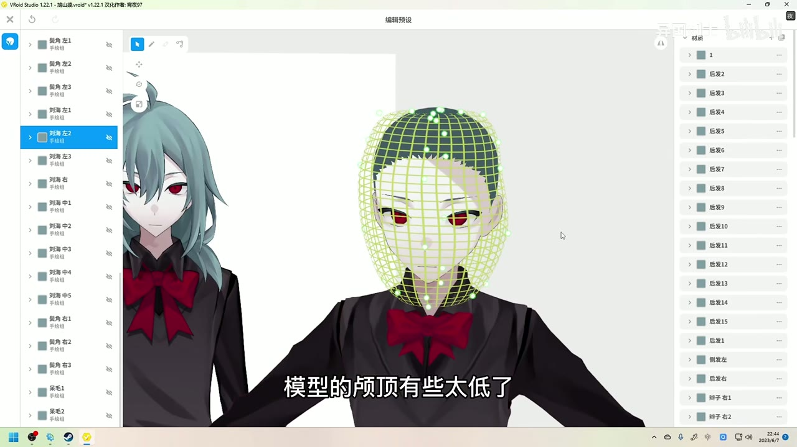
括号字幕先写：发现形状不好看，为了方便调整把头发关掉了。右边这个模型发丝被关掉，只留绿色发网，方便看头型。字幕说自己调没有办法达到很好的效果，所以先把人物后脑的高度调高。这一段没有单独的「后脑高度」滑杆，画面一直停在编辑预设的发网上。
加一组逻辑头发组
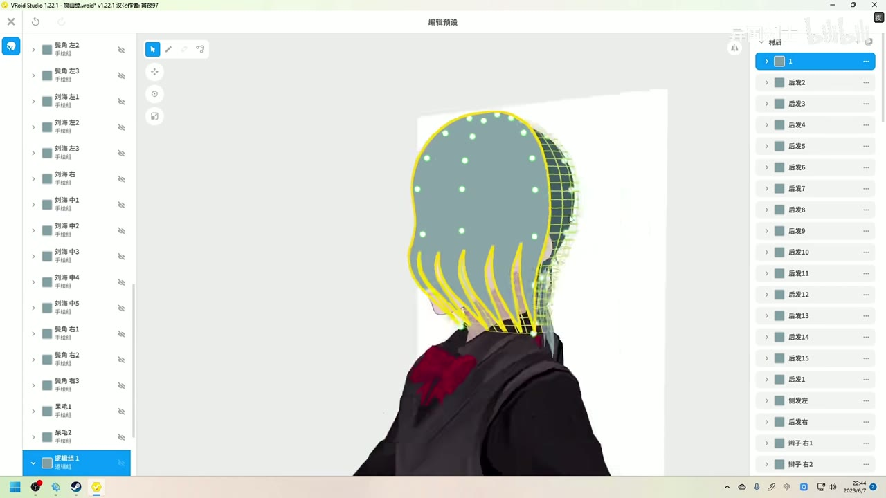
后脑调高之后，字幕说这里增加一组逻辑头发组。这个组的发网是按人物头型贴上去的。字幕说它比较特殊，参数在下面。加上之后左边多出「逻辑组1」。头发编辑器顶部另有「添加手绘头发组」和「添加逻辑头发组」，这一帧列表已经滚到下面，按钮不在画面里。
垫高颅顶，顺便补发缝
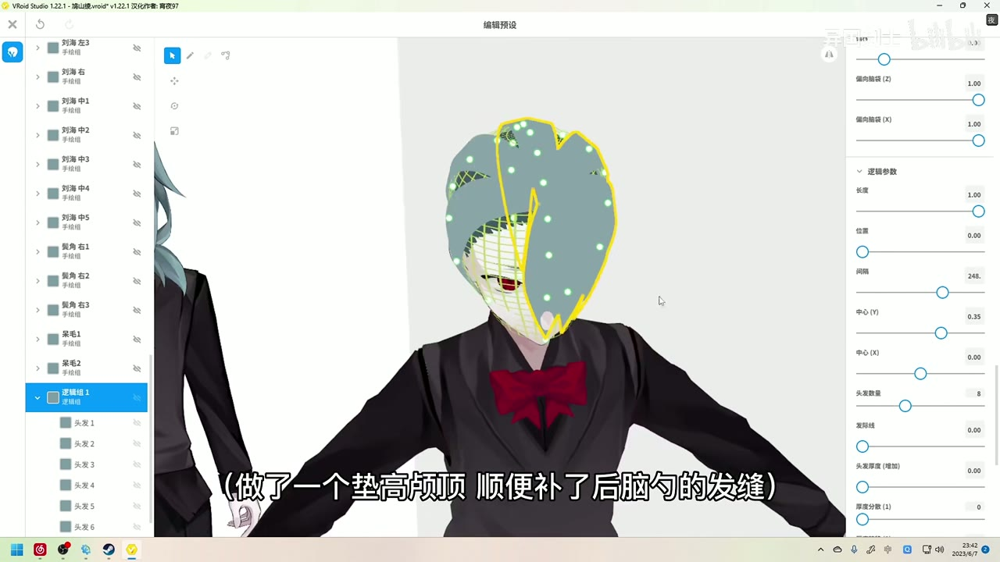
字幕说想在后脑上垫一些，补充发缝和颅顶高度。括号字幕写参数自己动手调一下就能知道意思，画面没有逐条讲。垫之前同一页读过：高度 0.40，偏移 0.01，偏向脑袋 (Z) 1.00，偏向脑袋 (X) 0.00，长度 1.00，位置 0.00，间隔 90.0，中心 (Y) 0.00，头发数量 6。上面还有一条蓬松曲线，没有数字。垫完这一帧，偏向脑袋 (X) 到 1.00，间隔到 248.，中心 (Y) 到 0.35，头发数量到 8，发网鼓起来盖住颅顶和后脑的发缝。括号字幕写成：做了一个垫高颅顶，顺便补了后脑勺的发缝。
涂成发根的颜色
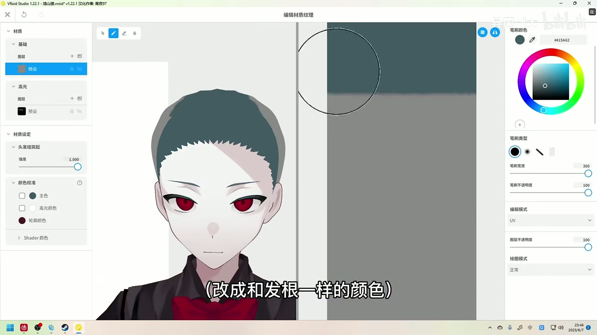
括号字幕写改成和发根一样的颜色。头顶这块深灰绿，和后面头发页主色 #415A62 是同一个色。这一帧是在 UV 上涂逻辑头发的材质，色轮开着。强度 1.000 和笔刷宽度 300 只是画面上的读数，这一段没有看见拖这两条。
从底部一根根挪发丝
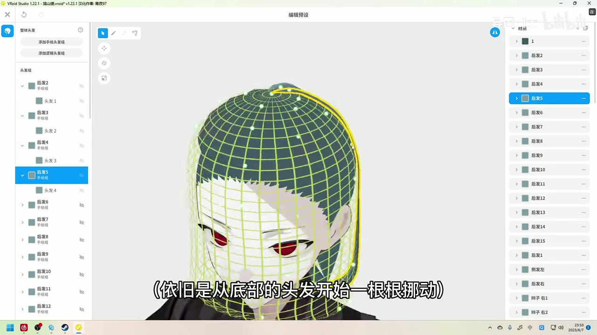
括号字幕写，这里是在重新调整发丝的位置，依旧从底部的头发开始一根根挪动。过程被说成比较无营养，所以只录了一部分。全部处理完，字幕说就可以开始做头发的物理。
自动生成的色块不理想
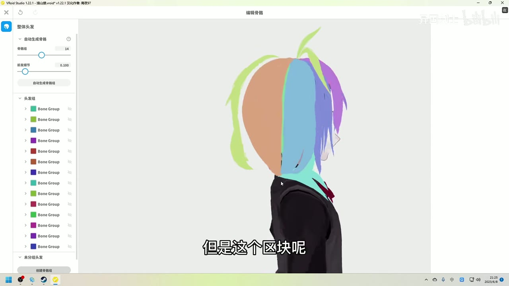
先回到顶部的头发，字幕说点左边的「自动生成骨骼组」。点完会自动分块，但字幕说这些区块还要自己调，不太理想，所以习惯一组一组来分，然后点撤回。撤回之后这些英文 Bone Group 和色块都没了，回到未分组头发，勾选是空的。
要一起飘的，勾选后创建骨骼组
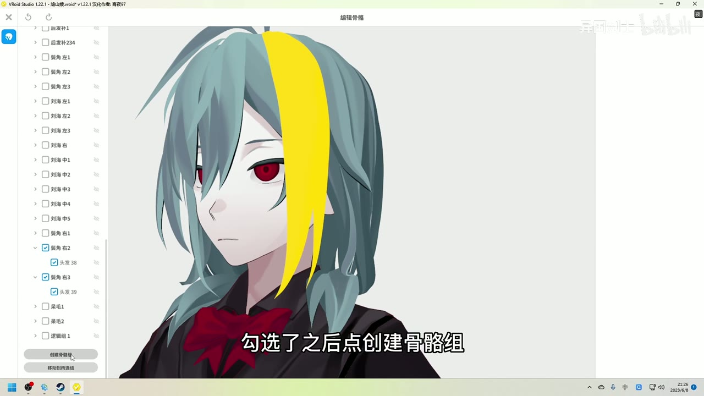
字幕说原理就是选中同一组物理里的头发。这两撮鬓角要在一块飘，选中之后会自动勾上。勾完点创建骨骼组，列表里就多出一个头发组。接着有一块希望固定、不要动的，字幕说就不要创建它的物理，把它取消。不想动的不要勾进去。
连着刘海的放进同一组
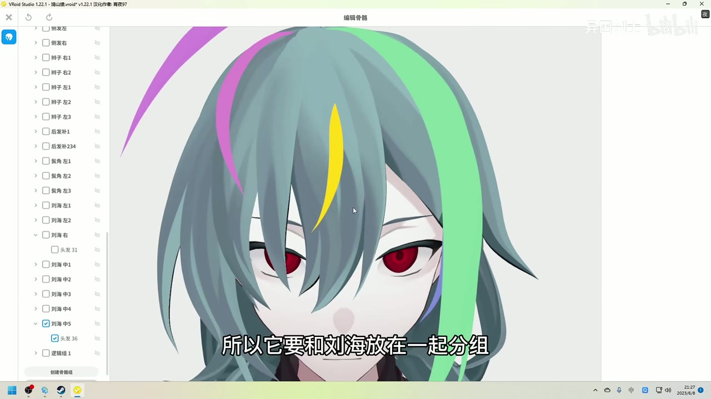
这一撮如果单独飘，会和后面的刘海脱节，所以和刘海放在一组。字幕还说两个呆毛也单独分。列表里能看见呆毛1、呆毛2，这一段没有停在勾选它们的画面上。
辫子按发势分，左右可以分开
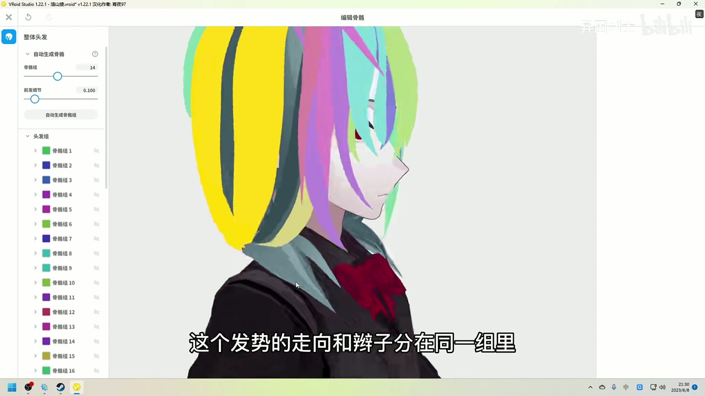
后面的麻花辫比较特殊，上面的头发和下面的辫子是连着动的。单独把上面分出来，发尾会往旁边飘，不跟辫子走。所以按发势把半边和辫子分在同一组，左右两边可以分开。里面凸出来的一截，字幕说不用管它怎么凸。
逻辑组送进骨骼组
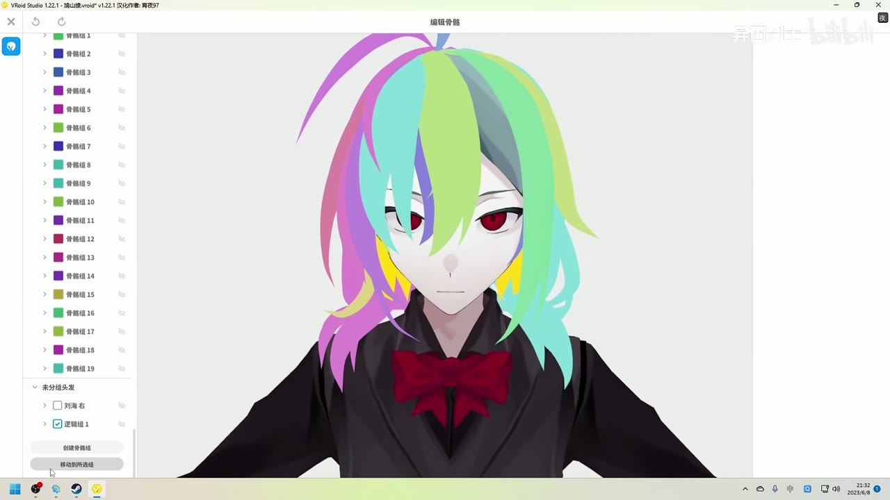
字幕说这一整组逻辑头发可以单独分进一个骨骼组。这一帧勾的是逻辑组1，鼠标停在移动到所选组。
骨骼节数和固定点
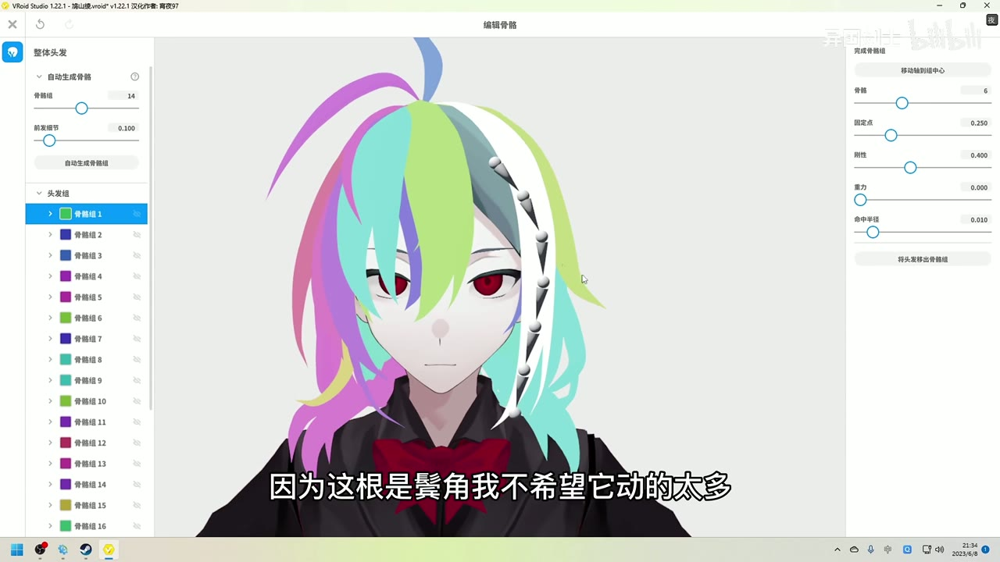
点开骨骼组，右边就是这些参数。字幕说那一节一节的东西就是骨骼，形变是一节一节来的；想更弹，就把骨骼设多一些。这一根是鬓角，不希望动太多，所以要设少。这一帧还是 6，同一组后面变成 4。固定点是从哪里开始晃：希望下半截晃、上半截不动，就往下拖。拖的时候读过 0.250，然后是 0.352，再停在 0.430。重力 0.000、命中半径 0.010 没有被拖。括号字幕说，剩下的就是自己一组组调参数。
到摄影棚用风看它怎么动
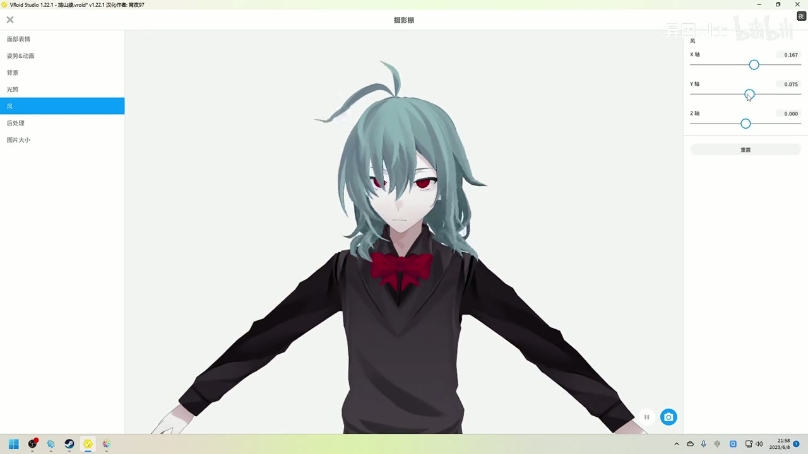
大致设完，字幕说先点保存，再进摄影棚，点风，看模拟。X、Y 能让头发往两边晃，Z 这一帧是 0.000。字幕说这样大致能看到它怎么动；哪里太夸张就回去改。也可以点姿势与动画。下拉里有动作1、动画2、姿势，缩略图是默认和站姿0到站姿6。打开的时候模型还是张着胳膊，没有切到站姿。
鬓角飘太多，把刚性拉大
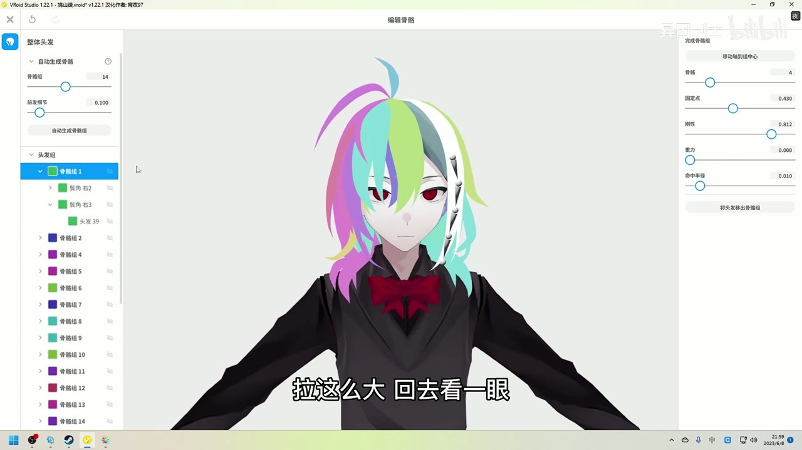
在姿势里看完，字幕说鬓角动得太多，回去把鬓角两边这个头发组的刚性调大。调之前同一组刚性还是 0.400，这一帧拉到 0.812。右边那一撮字幕也觉得幅度有点大，同样回去调。确认无误就可以导出。
导出时不要勾删除透明网格
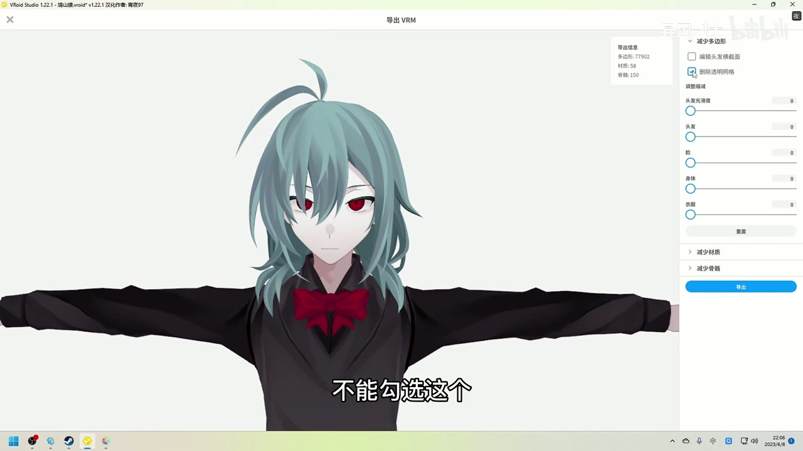
字幕说点右上角的导出键，导出为 VRM。缩减这几条都不用动，减少材质和减少骨骼也不用管。字幕写不能勾选删除透明网格，勾上之后做面捕的完美同步就认不出五官，透明网格得留下来。这一帧它没勾，多边形是 77902。下一帧弹窗背后仍然没勾，多边形变成 84752，材质 58、骨骼 150 没变。这两张存下来的图都不是勾着的状态，不要把 77902 记成勾上之后的数。然后直接点导出。
VRM 信息自己填
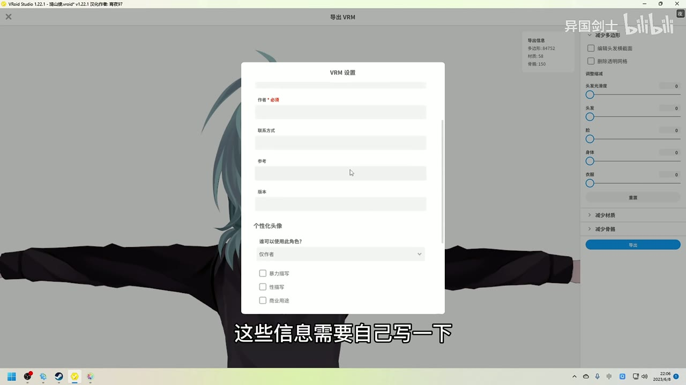
字幕说这些信息需要自己写一下。画面上作者还空着，没有替你填。
面捕里的闭眼会穿模
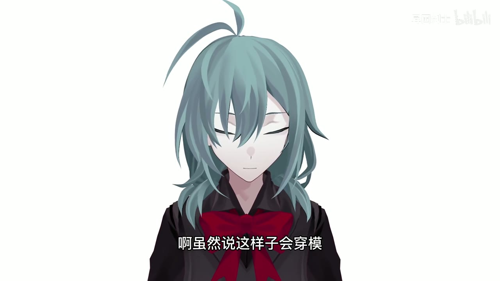
导出之后切到面捕软件。字幕说一开始设置的那些表情可以当按键动作被识别到。闭眼这一下字幕说会穿模。接着是高兴的表情，嘴角是弯的。软件名字画面上没有，只说面捕和完美同步。
半身能捕到手
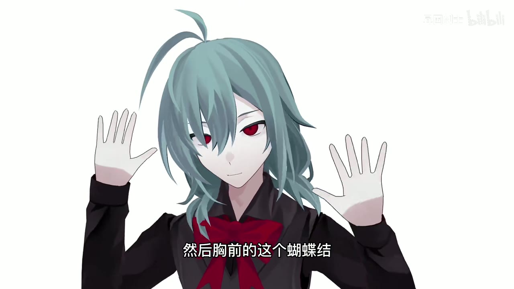
字幕说切到半身动捕之后就能捕到手。蝴蝶结这一句是口播：之前在 Blender 里重新捏过，现在的形状和立绘差不多。画面没有打开 Blender，只能看到领结成品。最后字幕写教程结束，再来一个 wink。wink 那一帧眼睛又是睁开的，闭眼的样子在上一张。